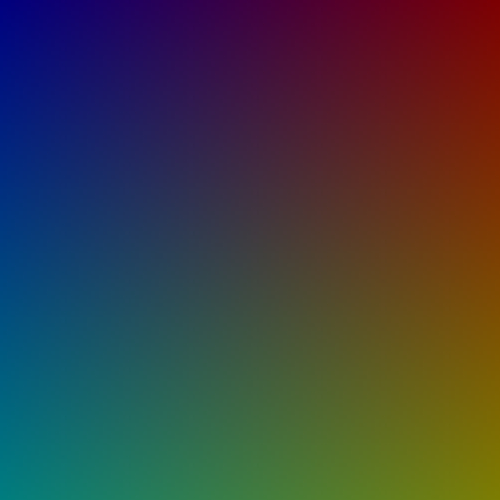

Please be patient, this page may take a while to load.
This tests to make sure setting point colors with stroke works properly.
If the canvas on the left matches the image on the right, the test passed.

// Test by Andor Salga
import processing.opengl.*;
void setup(){
size(500,500,OPENGL);
background(0);
stroke(255);
strokeWeight(1);
for(int x = 0; x < 255; x++){
for(int y = 0; y < 255; y++){
stroke(x,y,255-x);
point( x * 2, y * 2, 0);
}
}
}